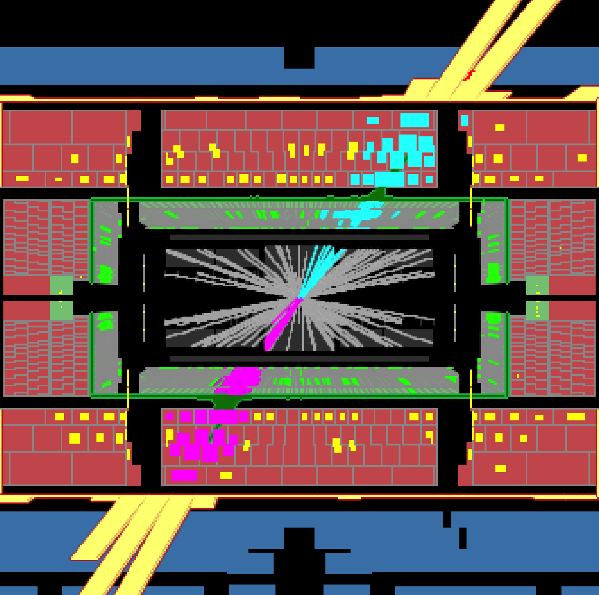
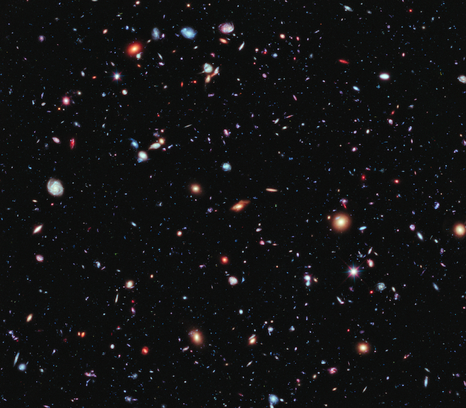

ℹ️ README: A longer introduction to Quarks, Spacetime, and the Big Bang (that I affectionately refer to as ‘QS&BB’) describing how particle physics and cosmology have evolved in only a few generations. Plus, what we’ll care about!
1 The biggest stories of all
In the beginning the Universe was created. This has made a lot of people very angry and been widely regarded as a bad move. Douglas Adams, The Hitchhiker’s Guide to the Galaxy
We’re about to follow two big stories which are chapters in the biggest story of all: the “just so” tale of the beginning of the universe. Yes, that one. Everything. The plot of this story has all sorts of twists and turns that we’re still unraveling. Surprises await.
Of course, the details are where the devil lives and they are fiercely complex. So much so that two entirely different scientific communities are currently deployed to battle with nature, who likes to keep secrets: those of us who work on the “outside” and those who explore the “inside.” The outside crew are astronomers and astrophysicists. They measure and characterize the constituents and nature of the cosmos. They look out. The inside teams mimic the earliest picoseconds of the universe by recreating its incredibly hot, adolescent conditions in laboratories here on the Earth. These are the particle physicists and they look in. I’m one of those. QS&BB is the story of both.
2 What’s the smallest thing we can know about?
2.1 The inside for my grandparents.
For people of my grandparents’ generation, the sophisticated answer would be “what you can see.” I was born in the year 1950, and so my grandparents were children at the dawn of the 20th century which is when physics got interesting. They would have been taught that if you can’t see it, then it can’t be real. To claim otherwise would be absurd. Chemists spoke of atoms, but were disdainful of anyone who thought they were real. They were just a shorthand picture for how to visualize elements. Physicists were even less flexible.
2.2 The inside for my parents.
For people of my parents’ generation, the answer would have been “protons, neutrons, and electrons.” The atom had been thrust into believability around the turn of the century, and then refined during the next two decades. But the neat planet-like picture of the atom was where it all stopped for many.
2.3 The inside …for us!
In our generation, the answer to the “smallest” question has been “quarks and leptons” …but we fully expect that they are not the end of the “smallest” story. We’re hard at work, even as we speak with brand new tools to explore further than ever before.

Maybe in your generation? The sky’s the limit! We’ve hints at solving some old puzzles and we’ll undoubtedly find new ones. We’re developing and deploying amazing new instruments and theoretical ideas now rub shoulders with not just nature, but philosophy and the deepest questions asked by humans. Your generation is going to see amazing things.
Through decades of intense experimentation and imaginative theorizing, the tiniest bits of reality are turning out to be a fascinating collection of objects. In the 1950s and 1960s, we just stood back and tried to catch the hundreds of particles that our experiments spit out at us. New particles every year! Names that nobody could remember. Hundreds of them, which was ludicrous! Didn’t nature have some plan?
“Quarks”? “Leptons”? Lots of jargon and I’ll keep it all straight for you as we go along.For now, quarks are itsy-bitsy pieces of the proton and leptons include the electron and others. New states of matter might be: “additional quarks, the Higgs Boson, Supersymmetric Particles, Weakly Interacting Massive Particles (WIMPs), Dark Matter particles…” all famous candidates for future discovery. Of course whenever we get too cocky, nature plots to surprise us with something completely unexpected—more often than we’d like to admit! So, we’re instinctively wary of being too sure of what’s coming.
The good news is that we’ve uncovered a model that’s a very good picture of how much of the fundamental particles of the universe work together and we’ve been exploring it since the 1970s. We’ve knitted that earlier mess together into a coherent picture of the entities themselves as well as the rules that govern how that stuff behaves. But we’re unhappy. Our grand synthesis of the Tiniest Bits Story—called the Standard Model — needs some polishing. Or more. While it’s been the gold-standard of the successful scientific theory, we expect that new tiny bits are lurking in our experiments and we will be astonished if nothing shows up as we dig deeper. This new anticipation would have been met with blank stares only a couple of decades ago.
So much for the inside effort.
3 Okay. So what’s the biggest real thing you can know about?
3.1 The outside for my grandparents.
For people of my grandparents’ generation the learned answer to this question would be “the size of the Milky Way,” which they would have been taught constituted the whole universe. Everything visible in the night sky was thought to be a part of one big, but still cozy cluster of stars which we see to be densest around the southern sky (from North America). Not only was my grandparents’ universe compact, it was supposed to be permanent—static and unchanging— built of three kinds of objects: planets, stars, and clusters of stars. Stars twinkled, planets were steadfastly bright, and clusters of stars were fuzzy, indicative of their presumed distances from us. Sure, they all moved with regularity during each night and shifted slightly in a year, but the large scale structure of my grandparents’ universe was simple: a nice, intimate, dependable universe.
3.2 The outside for my parents.
For people of my parents’ generation, the universe suddenly became huge. Those fuzzy clusters were found to be other galaxies outside of the Milky Way which are surprisingly far from us—we’re not alone in our comfy galaxy. They were taught about thousands—we now know, billions—of others, of which the Milky Way is a relatively modest and ordinary example.

This is the Hubble eXtreme Deep Field, a compilation of hundreds of days of observation of a single dime-sized patch on the sky in the constellation, Fornax. Every spot is a galaxy, some nearby and some at the edge of our ability to see. ```
In this remarkable galactic family photograph the youngest galaxy imaged is 13.2 billion years old. We see it as it was when its light left its surface, on the way to the Hubble’s camera. It’s also a time when the universe was much smaller than it is now. This picture is today’s answer to the “biggest thing” question.
3.3 The outside for us.
But, the real shocker was the overthrow of the static universe of my grandparents era. My parents’ universe was found to be flying apart—expanding—at a breakneck speed. No longer a tight-knit, stable thing…the universe is now huge and reckless. The really unsettling piece of news for my generation is that the Big Questions of antiquity are now legitimate scientific research programs: Was there a beginning to the universe? Are we alone? Will the universe end? Are there other universes? Was there anything before The Beginning? What drives the expansion of our universe to accelerate? The outside crowd thinks big thoughts now and this is a development of only the last couple of decades.
When I was in graduate school, a professor told me that Cosmology was “physics knitting.” Not any more! Cosmology in my and especially your generation is going to be flat-out amazing!
An Auspicious Beginning
Yes. The observable universe had a beginning, and quite a beginning it must have been: it was a roiling mess of radiation and elementary particles at temperatures never to be seen again. Everything that is—space, time, and all of energy—would have been confined into a size smaller than a baseball. Unthinkably dense and with growth that was stunningly rapid, our early universe defies imagination. It’s so outrageous that comprehending it seems a job for fiction and not science, yet my generation has also found ways to explore it: we probe it through direct telescope observations and we remake it in particle collisions. This is the blending of the outside with the inside pictures that motivates me.
Wait. I don’t believe in the big bang. You appear to, but isn’t what you think just another “belief”? Aren’t we each entitled to our own beliefs?
Glad you asked. “Belief” is a tricky word that we all use, although in our context, we should be clear and I’ll try to do that in the next lesson.
4 The punchline!
QS&BB tells the interleaved stories of the two sciences of Particle Physics and Cosmology and how they blended into a single believable narrative of how we all came to be. We’re deep into the story—the plot is well understood, the characters are developed, and a “can’t put it down” fever has set in. We’re eager to see how it comes out. I work on one (big!) experiment but there are many dozens of experiments involving thousands of us all around the globe — and in orbit above the globe and in deep underground laboratories inside of the globe — to push ourselves to the story’s climax.